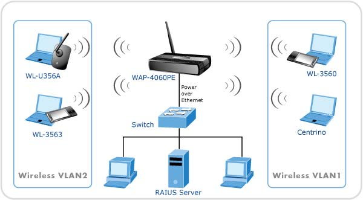

¿Que es una red Informatica?
Una red Informatica es un conjunto de dispositivos que se encuentran interconectados entre si a traves de un medio, estos intercambian informacion y comparten recursos.
- Son sistemas de comunicacionen la que distintos dispositivos actuan como emisory receptor de manera alterna
¿Qué es una Red Informatica y Como funciona?
Una red informática es un conjunto de dispositivos conectados entre sí para compartir información y recursos, como archivos, impresoras o internet. Estos dispositivos pueden incluir computadoras, servidores, routers y otros equipos de comunicación.
¿Qué es una red informatica y cuales son sus tipos de redes?
Los tipos de redes informaticas se clasifican segun su tamaño, rango o alcance
- Red de Area Personal PAN Esta Formada por los dispositivos de unica persona
- Red Inalambrica de Area Personal WPAN Es como la anterior pero de conexion inalambrica
- Red de Area Local LAN Son conexiones de rango de alcance local como dentro de un mismo edificio
- Red de Area Local Inalambrica WLAN Es una red LAN pero inalambrica
- Red de Area de Campus CAN Es una red de alta velocidad que conecta las redes locales en una area geografica, como dentro de un campus Universitario
- Red de Area Metropliitana MAN Red de alta velocidad que aporta cobertura en una area geografica extensa
- Red de Area Amplia WAN Da cobertura en una area extensa utilizando fibra optica o satelites
- Red Lan Logica VLAN Se instala sobre una red Fisica para incrementar el rendimiento y la seguridad
¿Qué funciones tiene una red Informatica?
Funciones de una red informática: